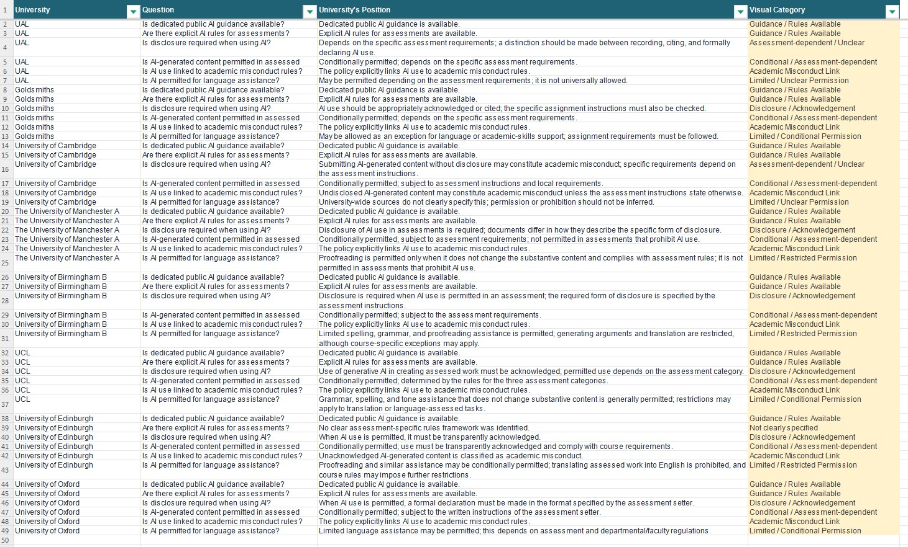

This week, we learned the concept of data collection, and after class we collected data on the topic of how UK universities' policies affect academic integrity in relation to generative AI. My group members and I discussed six variables to reflect different attitudes between the six UK universities' toward AI policies. Then each person found two universities to collect datas. I think the hardest part of this task was how to properly quantify and compare the data we collected. This required some Excel knowledge. Because the sample was very small, I didn't use a web scraper — instead I did simple data collection myself.
Below is a screenshot of the data we collected.
